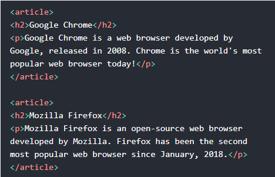

Diseño de Sitios Web - Conceptos Parte 2
Etiquetas HTML
En esta página se presentan contenidos debidamente redactados sobre de la temática escogida para la construcción del sitio web que cuentan con imágenes de apoyo. Las lecturas e imágenes están debidamente citadas con norma APA. (Ver referencias en la segunda sección)
Etiqueta <footer>
Define un pie de página para un documento o sección. Normalmente contiene información de autoría, informacion registrada, Información del contacto, mapa del sitio, enlaces a documentos relacionados.(w3schools. HTML <footer> Tag, 2012)
 (w3schools. HTML <footer> Tag, 2012)
(w3schools. HTML <footer> Tag, 2012)
Etiqueta <article>
Representa una contenido autónomo en un documento, página, aplicación o sitio. Se destina a distribuir de forma independiente o reutilizable, por ejemplo, publicación en el foro.(MDN web docs. article, 2020)
(w3schools. HTML <article> Tag, 2012)
Referencias
- w3schools. (19 de Septiembre de 2012). HTML <footer> Tag. Obtenido de https://www.w3schools.com/tags/tag_footer.asp
- MDN web docs. (13 de Abril de 2020). article. Obtenido de https://developer.mozilla.org/es/docs/Web/HTML/Elemento/article
- w3schools. (19 de Septiembre de 2012). HTML <article> Tag. Obtenido de https://www.w3schools.com/tags/tag_article.asp